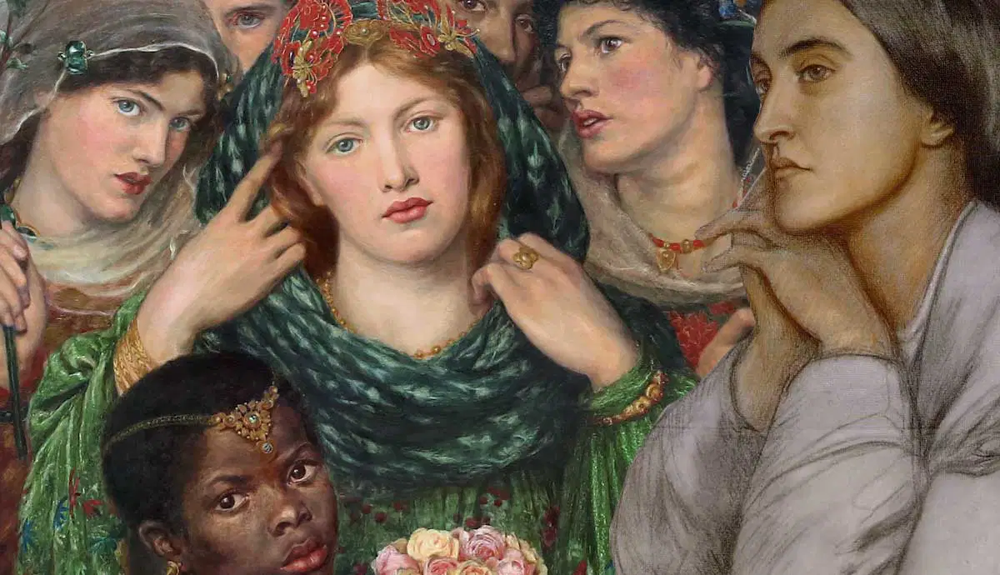
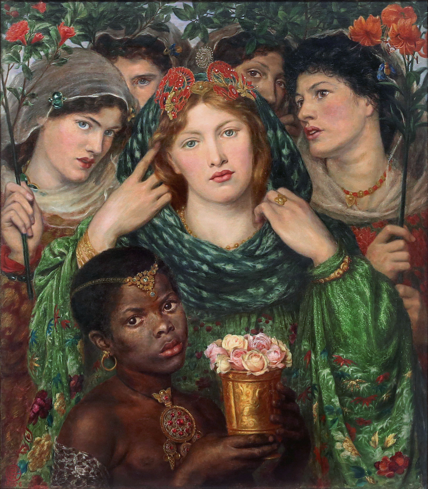
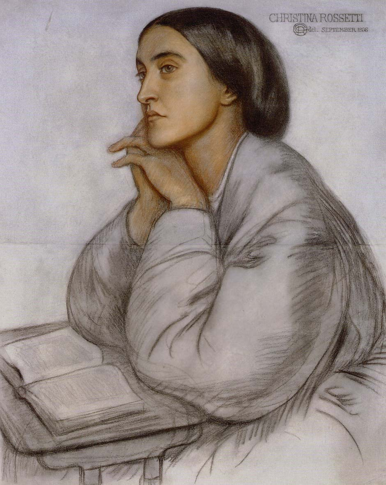
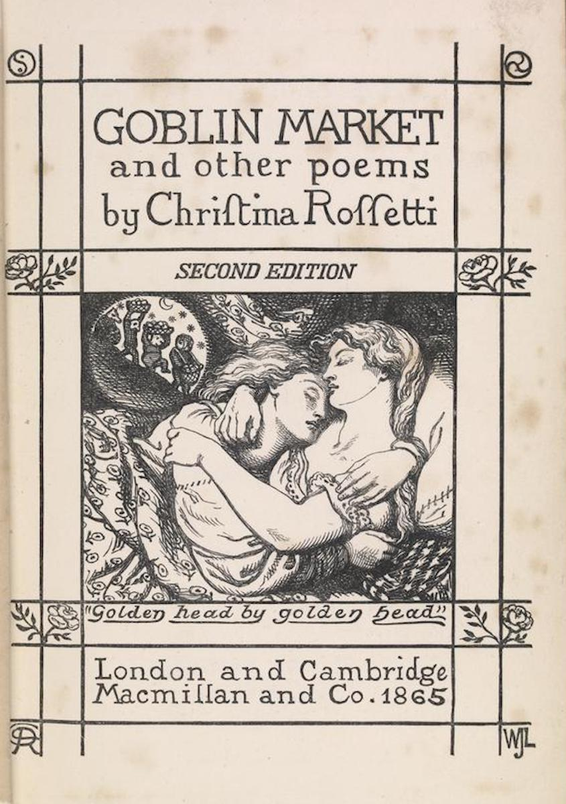
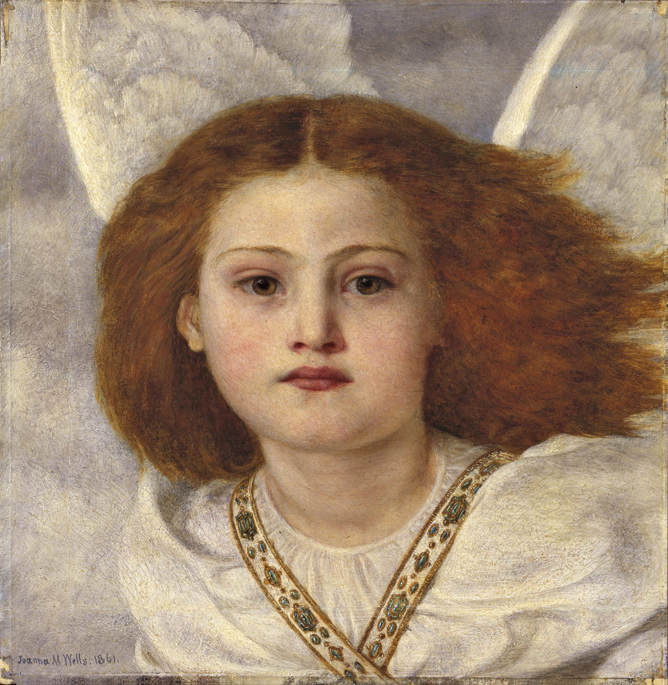
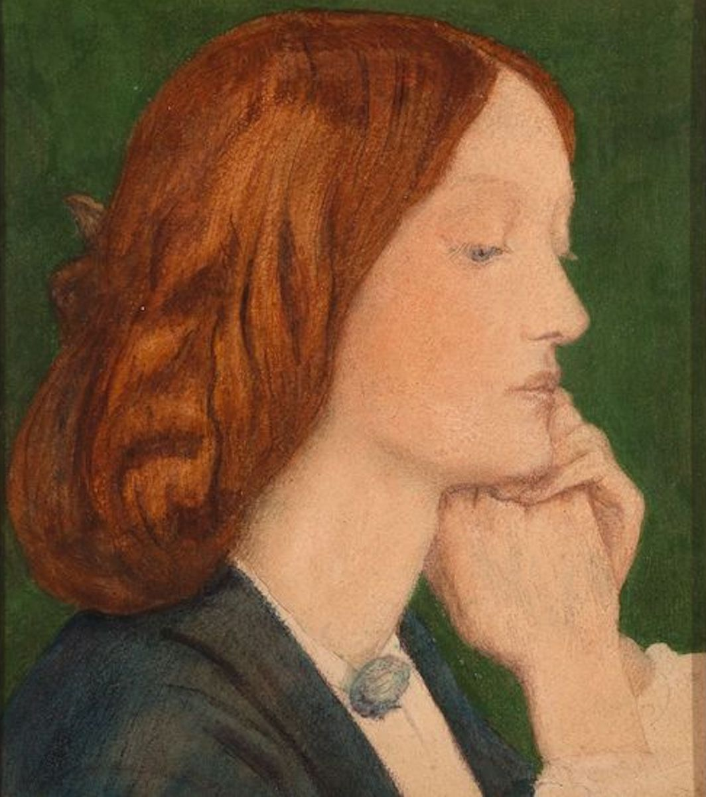
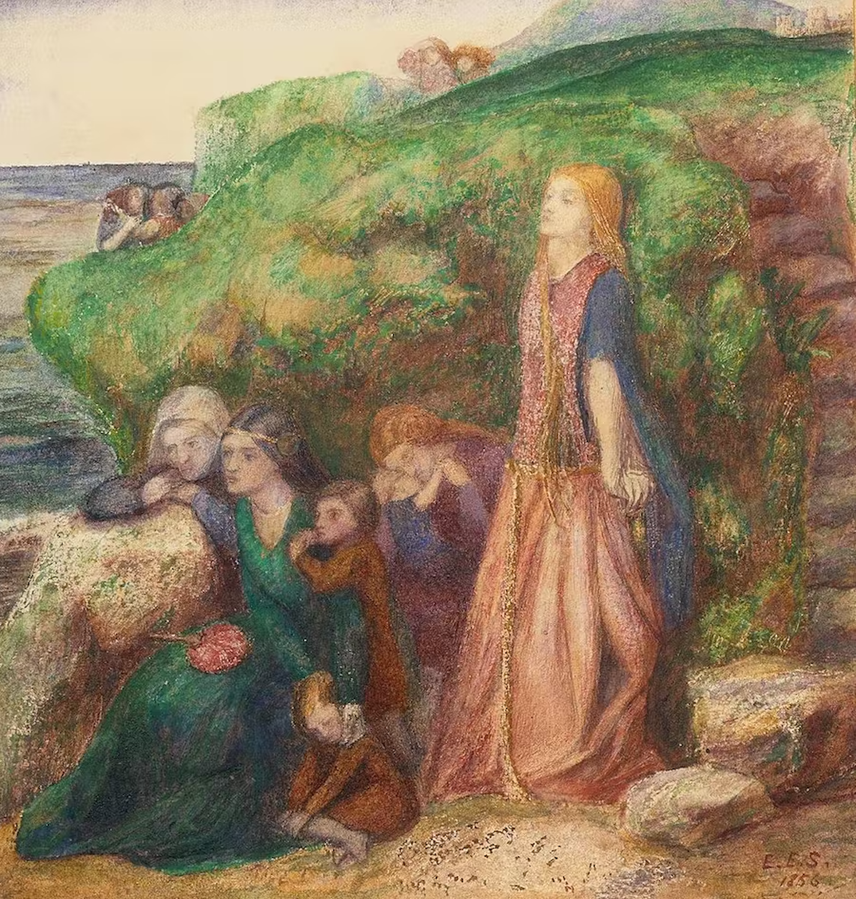
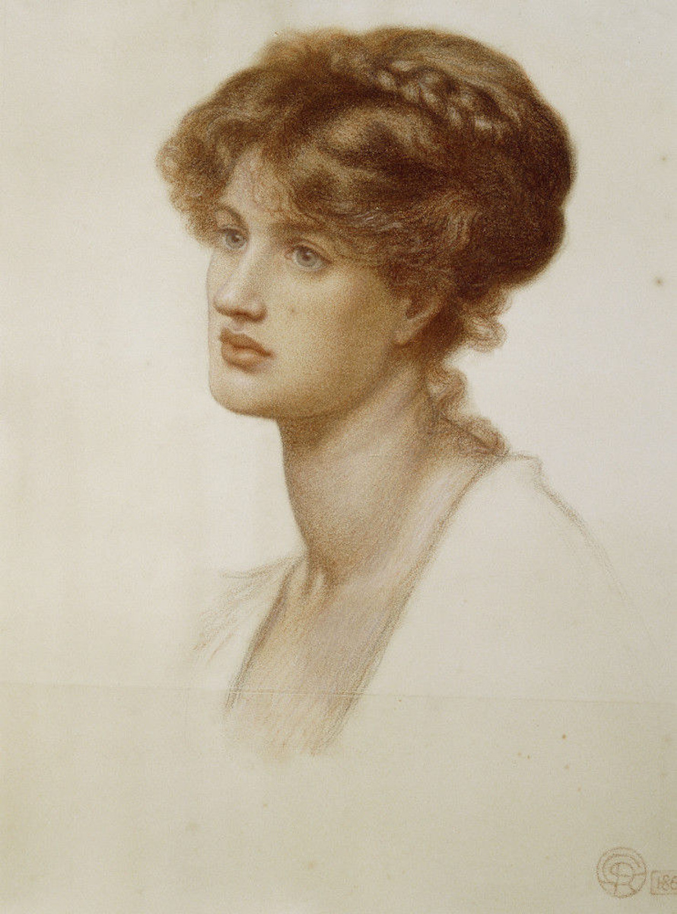

Meet the 6 Women artists Behind the Pre-Raphaelite Movement
The Pre-Raphaelite Brotherhood is well known for its romantic and alluring artworks. Discover the women artists that contributed to the Brotherhood’s famous oeuvre.

The Pre-Raphaelite Brotherhood was formed in 1848 by three artists: William Holman Hunt, John Everett Millais, and Dante Gabriel Rossetti. Gradually, the group expanded. From 1867, the Pre-Raphaelites also worked closely with the leading designer of the Arts and Crafts Movement William Morris. Apart from their shared views on art and design, these men also had something else in common: both their artistic circles included women. Not only were these women important as wives and sisters of the artists and as models and subjects of the paintings, but they also worked as artists themselves within the same circles.
The Women Artists in Pre-Raphaelite Circles

Women were not allowed to join the Pre-Raphaelite Brotherhood. At the time, men and women were not yet allowed to officially work together as colleagues. During the nineteenth century, European countries adopted new laws concerning women. This way, women in the West gradually gained more freedom and opportunities. By the end of the nineteenth, numerous countries allowed for women to receive proper art education, but separately from men.
Generally, women were not yet allowed to work after completing their education. Becoming an independent and professional artist wasn’t really an option. For this reason, women would often practice what they’d learned in art schools at home. This way they could be mothers while still doing what they loved without violating social norms. If a woman worked, it was probably because she financially needed to. However, rather than working independently, a female artist would join an atelier and contribute to works that required a feminine hand like weaving.
Even though women were not allowed to officially join the Pre-Raphaelite Brotherhood, they were not excluded from participating either. In general, the men in the group encouraged women’s aspirations. Morris in particular stood for a society in which everyone would be considered equal and to which each man and woman would be able to contribute. He wished for everyone to engage in creative and independent labor, resulting in a prosperous society that embraced nature. Under his influence, among others, women were able to create freely in the Pre-Raphaelite circles and in his company Morris & Co.
1. Christina Rossetti

One of the women who joined the Pre-Raphaelite movement as an artist early on was Christina Rossetti (1830-1894). Unlike her brother Dante Gabriel but similar to her other brother William, Christina joined the movement as a poet. Nowadays, she is even considered to be one of the finest poets of the Victorian Age. With her poems, Christina Rosetti also contributed to the Brotherhood’s magazine called The Germ. Besides poems, this magazine contained Pre-Raphaelite ideas, as well as reviews of art and artistic developments. Apart from her artistic contribution, Christina also modeled for several early Pre-Raphaelite paintings that depicted religious themes.
Religion in fact proved to be important to Christina Rossetti herself. She followed her sister Maria Francesca into Anglo-Catholic piety. However, in contrast to some other Pre-Raphaelite artists, Christina did not make direct use of religious themes in her poems.

Instead, it seems more like her religious practice formed the basis of her way of writing, which was generally multi-layered, contemplative, and reflective. The poem A Pause of Thought which Christina wrote in 1848 is a good example of this. In 1862, Christina published a collection of poems called Goblin Market and Other Poems. In 1866, this collection was followed by another one called The Prince’s Progress and Other Poems. Both works consist of her finest works.
After Christina fell ill with a thyroid disorder, which affected her appearance, she accepted her faith and continued to practice spiritual purity as well as the self-denial that this demanded. However, beneath this humility, devotion, and saint-like approach to life, she was a very passionate person with a keen critical perception and a good sense of humor. A part of her poetry’s success might be connected to her ability to unite both sides of her character in her work. Her poetry would show both her sensuous nature and strong ideals.
2. Joanna Boyce

Even though women were not yet allowed to enter the Royal Academy during Joanna Boyce’s lifetime, she did try to get the best possible alternative. While she couldn’t enter the Royal Academy, she was admitted to Cary’s Art Academy. After finishing her education there, she worked under James Mathews Leigh for a while before studying at the studio of the well-known French painter Thomas Couture in Paris. Couture also taught famous male painters like Edouard Manet, Henri Fantin-Latour, and Pierre Puvis de Chavanne. She aspired to be able to paint carefully and honestly, just like the Pre-Raphaelites.

While Boyce had first expressed her appreciation of the sincerity and the principles of the Pre-Raphaelites in the Saturday Review, the Brotherhood would later admire her for the exact same reasons. Her painting Elviga, which was shown at the Royal Academy Exhibition in 1855, received very positive feedback. Art critic John Ruskin, who the Pre-Raphaelites associated themselves with and who often wrote about them, also admired Elviga. He saw in this painting a kind of fidelity, not only to external nature but also to Boyce’s own imagination. Next to this, he praised the use of faint but pure colors. The painting, moreover, fitted well with the early Pre-Raphaelite art. The reason for this was that its subject Elviga was a historical figure. The Pre-Raphaelites frequently used historical subjects for their early works, alongside religious characters.
Boyce died at the very early age of thirty, caused by an infection she got after giving birth to her third child. However, she created a noteworthy oeuvre, one which the Pre-Raphaelites promoted both during her life and after her passing. She was also the sister of the Pre-Raphaelite watercolorist George Price Boyce.
3. Elizabeth Siddal
Elizabeth Siddal (1829-1862) joined the Pre-Raphaelite Brotherhood in 1849. Initially, she did not join them as an artist, but as the group’s most important model. She was wanted as a model because of her overall beauty and her angelic features. Her bright red hair, strong eyelids, colorful eyes, and small pouty lips made her look very pure and slightly medieval. She fitted perfectly into the historic and religious themes that the Pre-Raphaelites depicted. Some of the paintings she posed for were Bridesmaid and Ophelia by John Everett Millais, as well as Valentine Rescuing Sylvia from Proteus by William Holman Hunt. In these paintings, which were all made in 1851, she’s portrayed as a gorgeous woman with a somewhat mysterious look on her face.

Elizabeth Siddal modeled for Millais, Hunt, and Rossetti. However, she would not only remain a model to Rosetti but also became his apprentice and romantic partner. After learning how to draw and paint, Siddal made several drawings and watercolor paintings which were often inspired by medieval literary themes, poems by Alfred Tennyson, and traditional balladry.
According to Jan Marsh, Siddal’s paintings displayed a self-conscious and naive technique, with intense and romantic emotion. Siddal’s lack of conventional training could also be considered an advantage, according to Elizabeth Prettejohn. After all, she didn’t have to unlearn any classical conventions, and could instead work with the genuine naivety that the Pre-Raphaelites strived for. Her painting The Ladies Lament is a good example of her naive style.
Inspired by poetry, Siddal also ended up writing poems herself. She appeared to have a great talent for it. John Ruskin even said that she was a genius. Unfortunately, Siddal’s poems were never published during her lifetime.

After posing for the painting Ophelia, for which Siddal spent hours lying in a bath with cold water, she came down with pneumonia. To soothe the pain she endured, she started taking the addictive opium called laudanum. However, the pain of this temporary pneumonia was not the only thing she ended up taking laudanum for.
Her relationship with Rossetti ended up being a negative force in her life, as it was often dominated by Rossetti’s jealousy and treason. He wanted to keep her for himself but wasn’t able to fully commit either. Due to her laudanum addiction and the stress she was suffering from, her health deteriorated quickly. When she was in a very bad state, Rossetti finally married her after being engaged for ten years. However, after suffering a miscarriage, possibly caused by her poor health, Siddal became depressed. During her second pregnancy, she died by suicide.
4. Marie Spartali Stillman

Read the full article on www.thecollector.com and discover the three remaining female Pre-Raphaelite artists and their work.